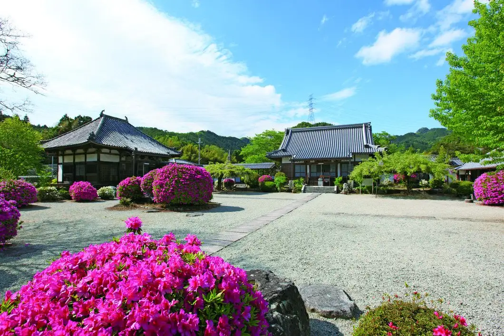
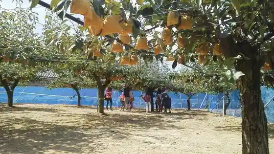
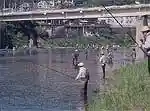
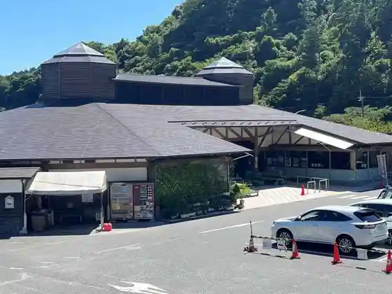
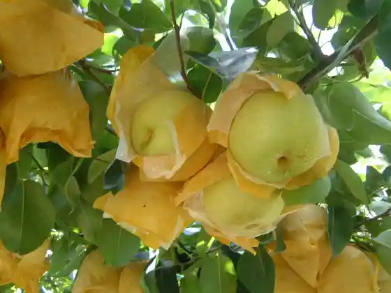

Japan / Nara / Oyodo
Oyodo · Nara
Oyodo
Highlighted on the Nara map.

Oyodo Town Hall
Seson Tera
Oyodo, Nara · 0746-32-5976 · Official / source link
Hiroshi Mizu Sono
Oyodo, Nara · 0747-52-4180 · Official / source link

Yoshinogawa (Oyodo Ryuiki)
Oyodo, Nara · Official / source link

Oyodo Culture Hall
Oyodo, Nara · 0747-54-2110 · Official / source link

Daia Ta Kogen Rien

Roadside Station Yoshino Michi Oyodo i Center
Oyodo, Nara · 0747-54-5361 · Official / source link
← Oji · All towns in Nara · Sakurai →
Other towns: Ando · Asuka · Gojo · Gose · Heguri · Higashiyoshino · Ikaruga · Ikoma · Kamikitayama · Kanmaki · Kashiba · Kashihara · Katsuragishi · Kawai · Kawakami · Kawanishicho · Koryo · Kurotaki · Mitsue · Miyake · Nara · Nosegawa · Oji · Sakurai · Sango · Shimoichi · Shimokitayama · Soni · Takatori · Tawaramoto · Tenkawa · Tenri · Totsukawa · Uda · Yamatokoriyama · Yamatotakada · Yamazoe · Yoshino
Back to all prefectures